North Peak A1b-α Faces
Sculpting the face players actually see: couloir and buttress relief on the A2 south-west face, under every existing protection. Compared with canonical R1 (M0) and the rejected A1a-V1 ridge study, using the same cameras, sun presets and material.
A1b-α does what A1a-V1 could not: its changes are on terrain players actually see. 100 % of the changed area is in line of sight from Birchwood and 85–87 % from the two trail cameras, against 0 % for V1, and every technical gate passes without releasing any protection.
Artistically it is not yet good enough. From the upper trail the couloirs and ribs read as a believable eroded face. From Birchwood and the Central Valley shoulder they read as a few dark scratches on a still smooth summit dome, and from the south-east oblique as a set of near-parallel grooves. Per the brief, it is preserved as a diagnostic checkpoint and not tuned towards acceptance.
Compare real renders
Same camera, sun and material for every variant. Walk cameras stand 1.75 m above the loaded terrain.
Artistic evaluation
Judged on the real captures under both sun presets. Pixel counts below show visibility only, not quality.
| 1. Visibly meaningful? | Partly. Clearly visible from the upper peak-ascent trail (1.6 % of frame pixels change under clay sun A, all of it on the face) and from the south-east oblique. From Birchwood (0.16 %) and the Central Valley shoulder (0.04 %) it is visible only as small marks on the dome flank. From the upper approach camera and High Tarn there is no change, because the face is outside the frame or out of sight. |
|---|---|
| 2. Does the mountain feel more naturally sculpted? | Only at close range. From the trail, the face gains erosion structure. From the far approaches, the summit dome and the smooth, frozen arêtes still dominate, so a sculpted patch on one face reads as surface detail rather than as a different mountain. |
| 3. Do the forms connect to the surrounding massif? | Downslope, yes: couloirs follow true fall lines and fan out into the face. Upslope, not enough: the crest is frozen and smooth, so couloir heads cannot notch it, and the ribs end against an unbroken ridge line. This is the main disconnection. |
| 4. Convincing under both sun presets? | Clay sun A (low, WNW) gives strong relief and the best result. Under clay sun B (SE) the face is lit frontally and the relief is soft. Neither makes the far views convincing. |
| 5. Free of gouges, mask edges and repetition? | No mask edges: the A1a mask trims at most 4 cm, and gradient and curvature in fade zones are no higher than inside the face. No gouges at the crest. Repetition is only partly avoided: in plan and in the oblique, the three major couloirs read as near-parallel, evenly spaced grooves, because the face is a uniform planar slope with parallel fall lines. |
Matched sheets (M0 | A1a-V1 | A1b-α), with a crop of the face
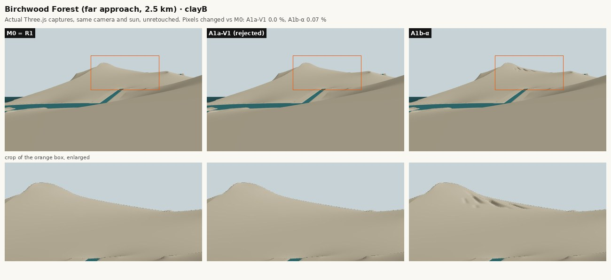
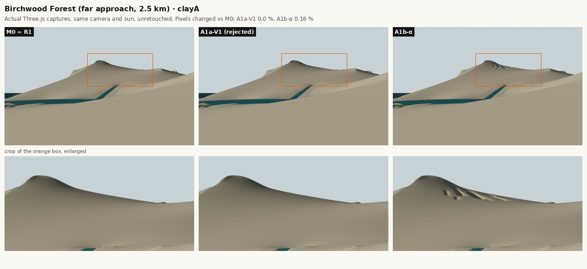
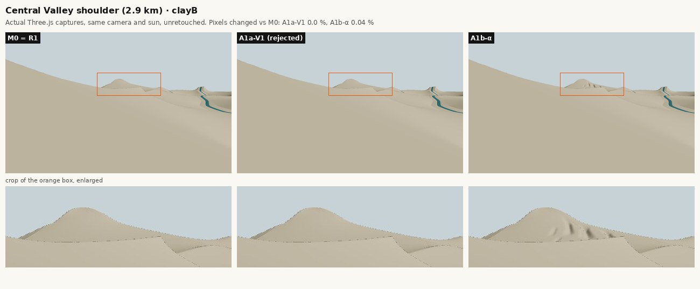
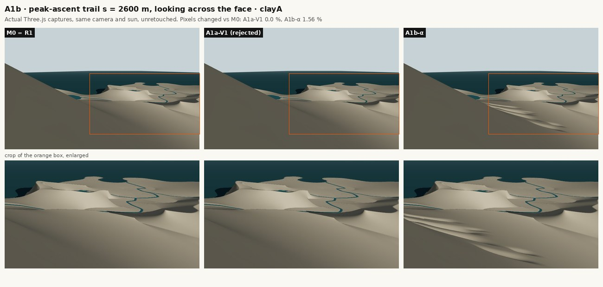
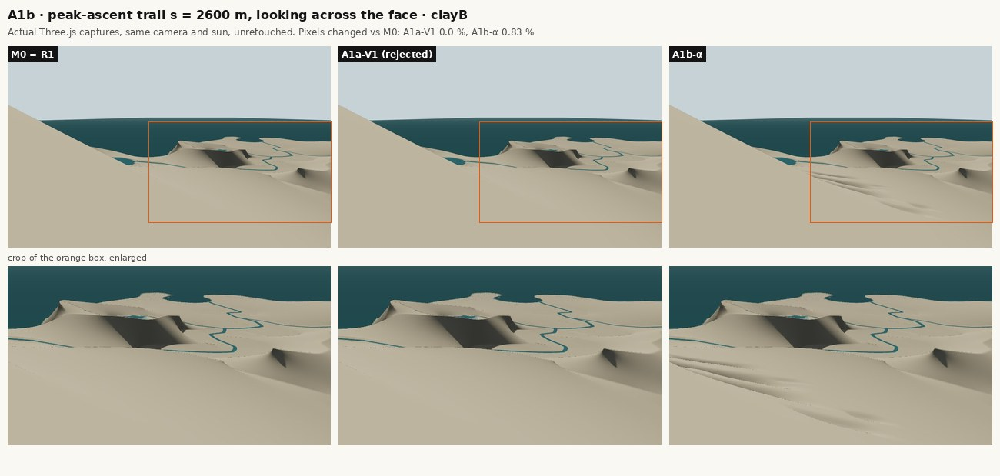
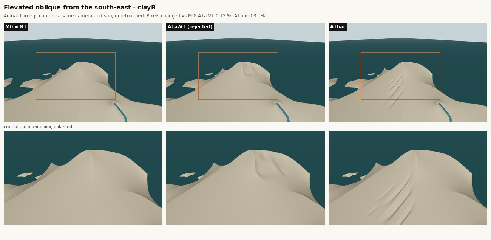
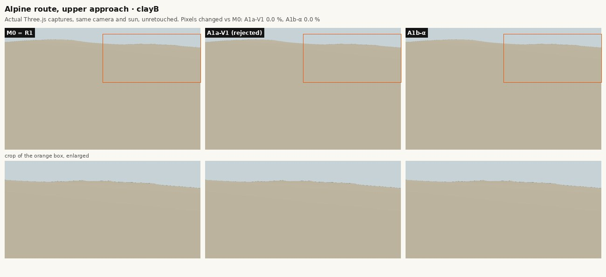
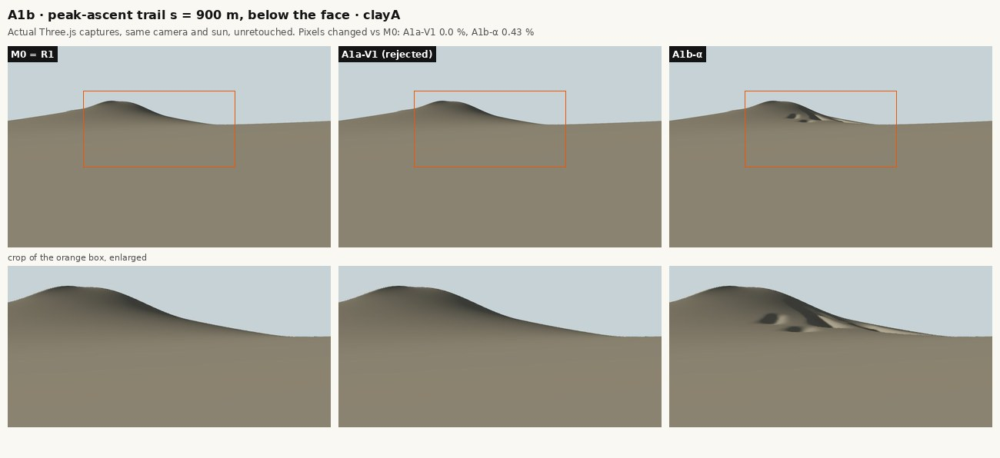
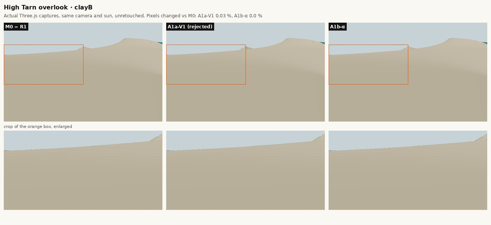
Is it visible? Measured
Share of each variant's changed terrain (more than 1 m) that a player at the viewpoint can see, from terrain-only line of sight.
| Viewpoint | A1a-V1 | A1b-α |
|---|---|---|
| Birchwood | 0.0 % | 100.0 % |
| Central Valley shoulder | 0.9 % | 89.1 % |
| Central Valley floor | 0.0 % | 0.0 % |
| High Tarn overlook | 14.0 % | 2.2 % |
| High Tarn east shore | 44.4 % | 33.4 % |
| High Tarn north shore | 4.8 % | 0.0 % |
| Route, mid approach | 0.0 % | 14.9 % |
| Route, upper approach | 0.0 % | 76.3 % |
| A1b trail camera s = 900 m | 0.0 % | 85.0 % |
| A1b trail camera s = 2600 m | 0.0 % | 86.6 % |
| View · pixels changed vs M0 (V1 / α) | Clay A | Clay B | Standard |
|---|---|---|---|
| North Peak from Birchwood | 0.0 / 0.16 | 0.0 / 0.07 | 0.0 / 0.0 |
| North Peak from the Central Valley shoulder | 0.0 / 0.14 | 0.0 / 0.04 | 0.0 / 0.01 |
| High Tarn overlook | 0.0 / 0.0 | 0.03 / 0.0 | – / – |
| High Tarn north shore (K1) | 0.0 / 0.0 | 0.0 / 0.0 | 0.03 / 0.0 |
| Alpine approach · peak-ascent mid | 0.0 / 0.0 | 0.0 / 0.0 | – / – |
| Alpine approach · below the final climb | 0.0 / 0.0 | 0.0 / 0.0 | 0.0 / 0.0 |
| A2 south-west face from the upper trail (s = 2600 m) | 0.0 / 1.56 | 0.0 / 0.83 | 0.0 / 0.0 |
| A2 south-west face from the peak-ascent trail (s = 900 m) | 0.0 / 0.43 | 0.0 / 0.18 | 0.0 / 0.01 |
| Elevated oblique · from the south-east | 0.0 / 1.92 | 0.12 / 0.31 | 0.46 / 0.39 |
| W arete · looking up to the summit | 0.0 / 0.0 | 0.0 / 0.0 | – / – |
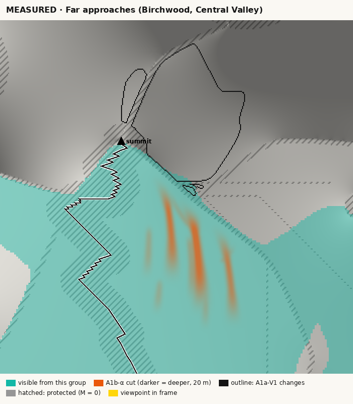
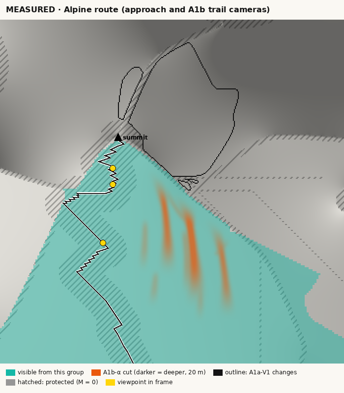
Terrain evidence
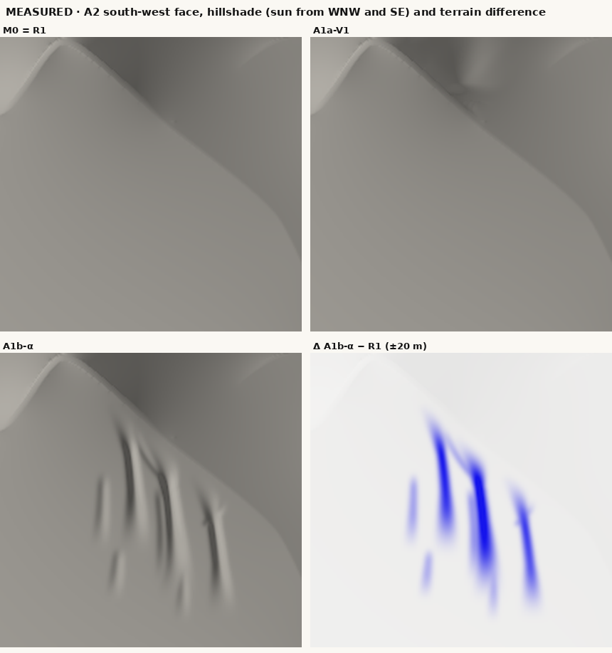
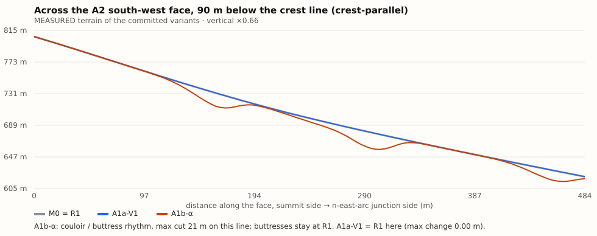
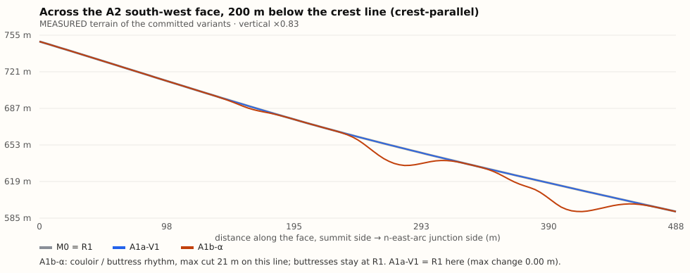
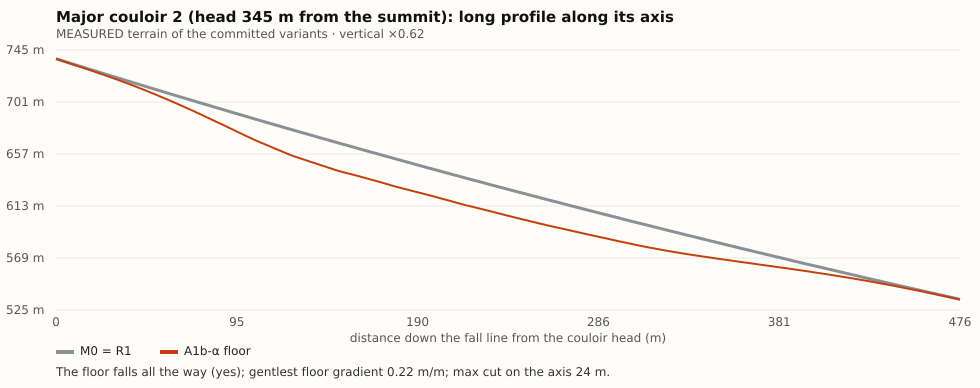
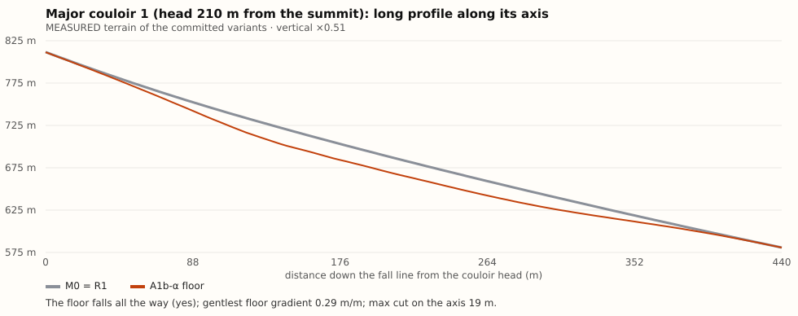
Technical gates
| Gate | Result |
|---|---|
| Empty overlay M0 = canonical R1 (byte for byte) | pass |
| Protected cells unchanged (all A1a classes, cell by cell) | pass |
| Outside the window unchanged | pass |
| Crest cells unchanged and above their lower bound | pass |
| Summit position and height unchanged | pass |
| ±75 m peak-ascent corridor and High Tarn seam unchanged | pass |
| No new dry sinks (priority flood) | pass |
| No drainage-destination change (no catchment rerouted) | pass |
| Water, lakes and channel beds unchanged | pass |
| Land/sea and coast 0–150 m unchanged | pass |
| Route centrelines unchanged (Δ = 0 m on all six) | pass |
| Walking test identical on M0 and A1b-α, all routes passable | pass |
| No mask-shaped edge (mask trimmed 0.01 % of the cut, max 0.05 m) | pass |
| Deterministic generation (2 runs, identical SHA-256) | pass |
| Viewer reports the active hash and the R1 baseline separately | pass |
| npm test: 43/43 pass (35 existing, unmodified, + 8 new A1b-α tests) | pass |
| npm run build (tsc --noEmit + vite build): pass | pass |
Full reports: validation/alpha.json, validation/m0.json, validation/passability.json, data/evidence.json, data/pixel_diff.json.
Limitations
- The far silhouette and the summit dome are unchanged by design (crest bands, summit and ±75 m corridor frozen), so the experiment cannot change the read of the mountain from Birchwood. That would need R-A or the crest-level decisions R-B/R-C.
- R1 gives this face a uniform planar slope, so fall-line couloirs are near-parallel by construction. Breaking that needs larger-scale massing (buttress volumes, shoulders), which cut-only face relief cannot build.
- Couloir heads stop 18 m below the authored crest line to keep the crest lower bound and its fade untouched, so no couloir reaches the skyline.
- The s = 900 m trail camera sees the face only near its upper edge in perspective, so the s = 2600 m camera is the clear player-height view.
- Pixel-change counts use a coarse threshold (|Δ| > 12 after a 3 × 3 median). They show visibility, not quality.
- Captures use SwiftShader software WebGL in clay and standard materials. No vegetation, snow or rock textures; real materials would change contrast.
- Only the evaluation cameras were captured for A1b-α (10 views in both clay suns, 7 in standard). The C1, G1 and north-side A1a cameras look at terrain A1b-α does not change.
Recommendation
Do not accept A1b-α as a landform, and do not continue tuning the same face with deeper or more cuts: the limiting factor is the smooth, frozen crest and dome that frame it, not the depth of the couloirs.
Recommended next step: a summit-block experiment (A1b-β), because the decisive flaw is the disconnection between sculpted faces and the smooth dome and crest. It needs the R-A corridor release, which is not approved; if R-A is approved, run β with the A1b-α face as its lower context.
If R-A stays closed, the only remaining no-release calibration is a second visible face (A3 south) with fewer, broader buttress-scale forms, to test whether consistency across faces helps. Expected gain is low, because the dome stays as it is.
Do not start C1-R yet: it is 0 % visible from current player positions and needs a viewpoint decision (R-E) first.